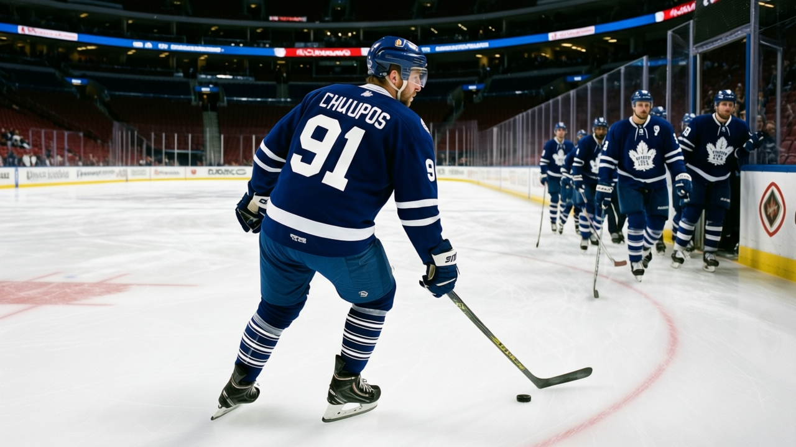
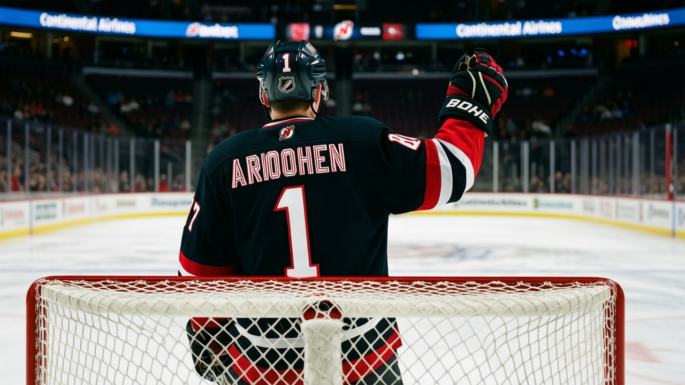

TOR
TORChlup returns January 3, and the Devils are the first thing he sees
The 18-year-old's return date lands on the road game at New Jersey, and the lineup shifts around what the medical staff decides on game morning
 Sam OkaforLeafs beat reporter · Queen City Telegram
Sam OkaforLeafs beat reporter · Queen City Telegram
Petr Chlup82 carries the league's hot-streak marker, which names no body part and is not an injury; he is available. Toronto visits  New Jersey Devils that evening at Continental Airlines Arena.
New Jersey Devils that evening at Continental Airlines Arena.
He is 18, centres the third line (L3C_), and carries 12 goals, 9 assists, 21 points in 27 games at 12.9 minutes a night. His Book grade is 81, potential 95. The cap hit is $2.34M with two years remaining. He is the youngest regular on this roster and the second-highest scorer among centres behind  Mats Sundin87 and
Mats Sundin87 and  Brad Richards85.
Brad Richards85.
What the lineup does without him
If Chlup is healthy, the third centre holds and Vaclav Spacek75 stays on the fourth line where he has 5 goals and 6 assists in 21 games. If he is not, Richards likely takes the first centre slot and Spacek slides to second. The fourth line gets thinner either way; Konstantin Koltsov71 and  Nikita Alexeev76 carry the wing spots there and neither is a natural centre.
Nikita Alexeev76 carry the wing spots there and neither is a natural centre.
 Stanislav Chistov80 has dressed in 24 games at 11.7 minutes a night and carries a K2LW assignment, but he is a left wing. The centre depth past Richards and Spacek is
Stanislav Chistov80 has dressed in 24 games at 11.7 minutes a night and carries a K2LW assignment, but he is a left wing. The centre depth past Richards and Spacek is  Jason Spezza70, who has 9 goals and 5 assists in 29 games at 8.3 minutes a night. Spezza's Book grade is 69, potential 99. He is 21 and not yet a full-time NHL centre.
Jason Spezza70, who has 9 goals and 5 assists in 29 games at 8.3 minutes a night. Spezza's Book grade is 69, potential 99. He is 21 and not yet a full-time NHL centre.
New Jersey on the road
The Devils are 19-9-3, 49 points, on a 1-game win streak. They have scored 135 and allowed 109 this season. Their away record reads 12-5. Ari Ahonen84, the backup goaltender with 7 starts, sits at plus 4 on the Bureau's Development Index, a jump normally reserved for a starter on a run.  Jay Pandolfo70 is a faller at minus 3, now at an overall of 72, which means the fourth wing lost some depth in the last week.
Jay Pandolfo70 is a faller at minus 3, now at an overall of 72, which means the fourth wing lost some depth in the last week.

Toronto's schedule from here: New Jersey on the road January 3, New Jersey at home January 4,  Boston Bruins at home January 7. Boston is 14-17-3, 37 points, 6-13 at home and 11-7 on the road. They lost 2-4 to New Jersey on December 30 and are on a 1-game skid.
Boston Bruins at home January 7. Boston is 14-17-3, 37 points, 6-13 at home and 11-7 on the road. They lost 2-4 to New Jersey on December 30 and are on a 1-game skid.
The crease split continues:  Ed Belfour92 has 14 starts at 57.1 minutes a night,
Ed Belfour92 has 14 starts at 57.1 minutes a night,  David Aebischer85 19 at 57.9. Belfour told The Tunnel's Jan Kowalczyk after the Calgary game on December 27: "At 39, I'll take every clean kill they hand me." The penalty kill has done enough. The next three games decide whether the first week of January looks like the first week of December.
David Aebischer85 19 at 57.9. Belfour told The Tunnel's Jan Kowalczyk after the Calgary game on December 27: "At 39, I'll take every clean kill they hand me." The penalty kill has done enough. The next three games decide whether the first week of January looks like the first week of December.
---
Correction. An earlier edition of this piece read the league's roster designation as an injury. It is not one: the marker carried here is a form or fitness icon, and the men named were available. Only a designation that names a body part is an injury. The passage has been corrected.